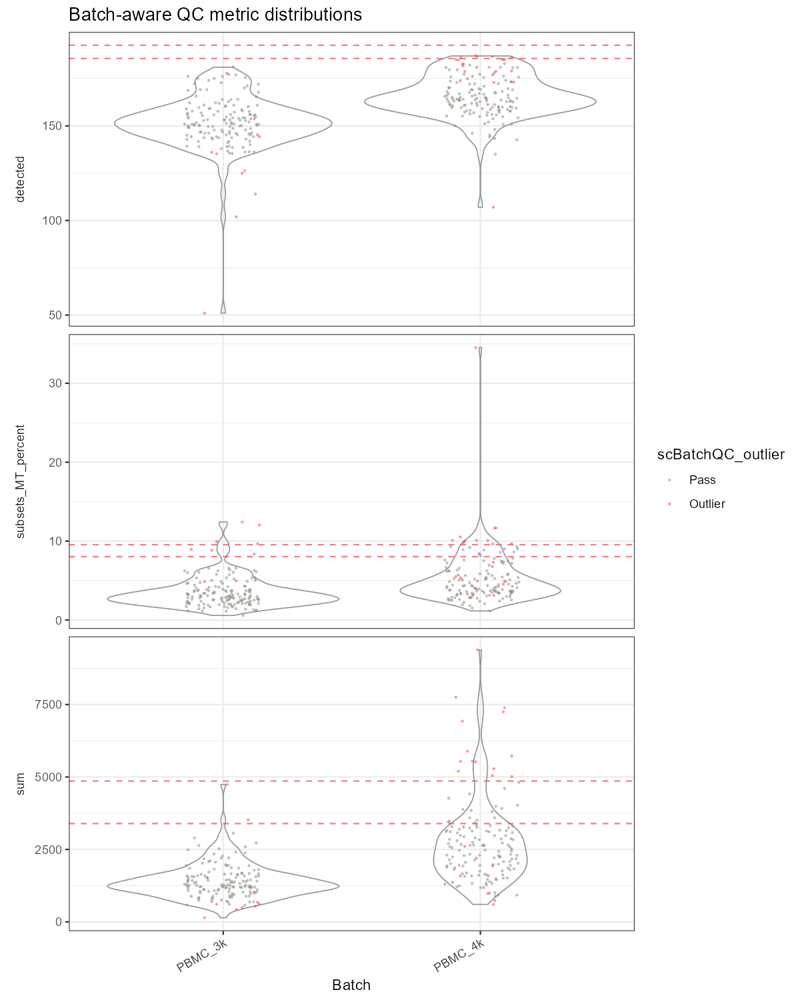

Overview
scBatchQC provides a hierarchical empirical Bayes framework for quality control in multi-sample, multi-batch single-cell RNA-seq (scRNA-seq) experiments.
Most existing QC tools apply a single global MAD-based threshold across all cells — ignoring the fact that library size distributions, mitochondrial fractions, and doublet rates differ systematically across batches. This leads to over-filtering of low-depth batches and under-filtering of high-depth ones.
scBatchQC solves this by:
- Estimating per-batch QC metric distributions (median + MAD)
- Shrinking per-batch estimates toward a global empirical Bayes prior
- Modeling per-batch doublet rates from cells-loaded metadata and protocol type
- Returning a
SingleCellExperimentwith calibrated QC flags incolData
Installation
# Install from Bioconductor (once accepted)
if (!requireNamespace("BiocManager", quietly = TRUE)) {
install.packages("BiocManager")
}
BiocManager::install("scBatchQC")
# Or install the development version from GitHub
BiocManager::install("SubhadipJana1409/scBatchQC")Quick start with real PBMC data
The package ships a subset of real PBMC data from Zheng et al. (2017) in inst/extdata/pbmc_small.rds (193 genes × 300 cells, two batches: PBMC_3k and PBMC_4k).
library(scBatchQC)
library(SingleCellExperiment)
# Load the bundled real PBMC data
sce <- readRDS(system.file("extdata", "pbmc_small.rds",
package = "scBatchQC"))
# Step 1: batch-aware QC flagging
sce <- batchAwareQCMetrics(sce, batch = "batch", nmads = 3)
# Step 2: estimate doublet rates
cells_loaded <- c(PBMC_3k = 6000, PBMC_4k = 8000)
sce <- estimateBatchDoubletRate(
sce,
batch = "batch",
cells_loaded = cells_loaded
)
# Step 3: visualise
plotBatchQC(sce, batch = "batch")
# Step 4: filter
sce_filtered <- sce[, !sce$scBatchQC_outlier]Key functions
| Function | Description |
|---|---|
batchAwareQCMetrics() |
Per-cell QC with hierarchical MAD thresholds |
estimateBatchDoubletRate() |
Per-batch doublet rate modelling |
harmonizeQCThresholds() |
Interactive threshold exploration |
plotBatchQC() |
QC distribution violin plots per batch |
BQCResult |
S4 container for batch QC results |
qcFlags() |
Accessor: extract QC flag DataFrame from BQCResult |
doubletScores() |
Accessor: extract doublet scores from BQCResult |
batchSummary() |
Accessor: extract per-batch summary from BQCResult |
How the shrinkage works
For each QC metric and batch, scBatchQC estimates:
- Per-batch median and MAD
- A global prior pooled across batches (weighted by √n)
- A shrinkage-adjusted threshold:
threshold_b = shrunk_median_b + nmads × shrunk_MAD_bwhere shrunk = (1 - s) × per_batch + s × global_prior and s is the shrink_strength parameter (default 0.5).
shrink_strength |
Behaviour |
|---|---|
| 0 | Fully per-batch (no pooling) |
| 0.5 | Balanced (default) |
| 1 | Fully pooled (ignores batch) |
Example output
Tested on real PBMC data from Zheng et al. (2017) via TENxPBMCData (193 genes × 300 cells, 2 batches):
QC distributions per batch

Violin plots of library size, genes detected, and mitochondrial fraction per batch. Dashed red lines = batch-harmonised thresholds. Red points = flagged outlier cells.
Console summary
Outlier cells per batch:
PBMC_3k PBMC_4k
FALSE 138 125
TRUE 12 25
Estimated doublet rates:
PBMC_3k PBMC_4k
0.045 0.060
Threshold sweep (nmads):
nmads = 2.0 -> 87 cells flagged
nmads = 2.5 -> 51 cells flagged
nmads = 3.0 -> 38 cells flagged
nmads = 3.5 -> 25 cells flagged
nmads = 4.0 -> 17 cells flagged
After filtering: 263 / 300 cells retained (12.3% removed)Example data
The package includes a subset of real PBMC single-cell RNA-seq data for demonstrations and testing:
| File | Description |
|---|---|
inst/extdata/pbmc_small.rds |
193 genes × 300 cells, 2 batches (PBMC 3k + 4k) |
inst/scripts/make_example_data.R |
Provenance script documenting how the data was obtained |
inst/scripts/run_full_demo.R |
End-to-end demo exercising all package functions |
Data source: Zheng GXY et al. (2017). Massively parallel digital transcriptional profiling of single cells. Nature Communications, 8:14049. doi:10.1038/ncomms14049
To run the full demo:
# From the package root
source(system.file("scripts", "run_full_demo.R",
package = "scBatchQC"))Citation
If you use scBatchQC in your research, please cite:
citation("scBatchQC")Jana S (2026). scBatchQC: Batch-Aware Cell Quality Control for Single-Cell RNA-seq. R package version 0.99.0. https://github.com/SubhadipJana1409/scBatchQC
Contributing
Bug reports and feature requests are welcome at https://github.com/SubhadipJana1409/scBatchQC/issues
Supporting this work
If scBatchQC helps your research, please consider sponsoring @SubhadipJana1409 to support maintenance and new features.